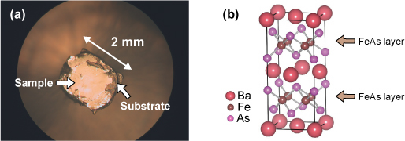

鉄系高温超伝導体の三次元電子構造の解明
2008 年 2 月、鉄原子を含む LaFeAsO1-xFx において超伝導転移温度 Tc が 26 K を示し、高圧下では 43 K に上昇することが報告された[1]。磁性と超伝導は競合関係にあると考えられていたにもかかわらず、磁性元素の代表である鉄やニッケル元素を含む物質で超伝導現象の出現したため、多くの研究者の注目を集め様々な分野で研究が展開されている。現在では、LaFeAsO の La サイトを希土類元素で置換した物質で 56 K の転移温度を示し、非酸化物超伝導体で最高であった MgB2 (Tc = 39 K) を追い越すほどになった。
(a) BaFe2As2 の顕微鏡写真 (b) BaFe2As2 の結晶構造
鉄系高温超伝導体の母体となる物質は、ある温度 (Ts) 以下で鉄のスピンが反強磁性的に整列する[2]。元素置換などの方法で電子またはホールを FeAs 面にキャリアドーピングし磁気秩序を破壊することで超伝導が出現する。ここで気になるのは、最高転移温度 160 K を誇る銅酸化物の高温超伝導体との相違点である。銅酸化物高温超伝導体の母物質は反強磁性の「絶縁体」であるが、鉄系の高温超伝導体は反強磁性の「金属」である。また、c 軸方向の電気伝導が銅酸化物系に比べて大きく、三次元的な金属伝導を示すことが報告されている[3]。さらに、角度分解光電子分光の実験からフェルミ準位近傍には鉄の 3d 軌道が支配的であることがわかっている[4]。以上のことから、鉄系の高温超伝導体においては輸送特性の三次元性と鉄元素のスピン、および 3d 電子軌道の特性が超伝導に重要な役割を果たしていることが示唆される。(a) BaFe2As2 の顕微鏡写真 (b) BaFe2As2 の結晶構造
そこで我々は、新奇高温超伝導体の超伝導メカニズムを解明するためには、母物質の三次元電子構造を明らかにする必要があると考えた。角度分解光電子分光法はフェルミ準位近傍の電子状態を直接観測することができる強力な手法である。我々は、広島大学放射光科学研究センター (HiSOR) BL-1 および BL-9A で実験を行い、高いエネルギー・波数分解能と偏光特性を活用し三次元フェルミ面の直接観測や、フェルミ準位近傍に位置する電子軌道の特定を行った。
参考文献
[1] Y. Kamihara et al., J. Am. Chem. Soc. 130 3296 (2008)
[2] C. de la Cruz et al., Nature 453 889 (2008)
[3] A. Tanatar et al., Phys. Rev. B 134528 (2009)
[4] T. Sato et al., J. Phys. Soc. Jpn. 77 063708 (2008)